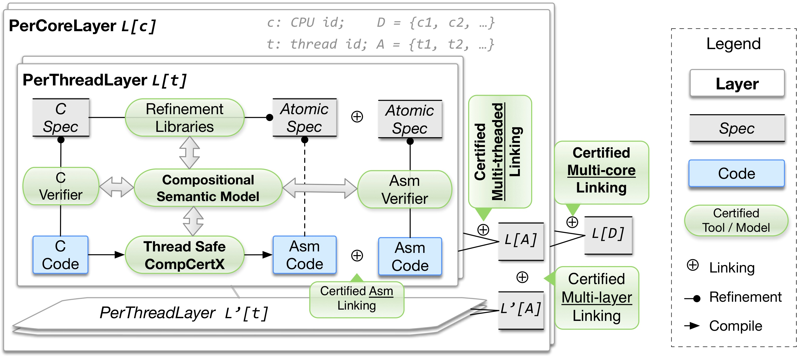

This document contains the instructions for compiling and evaluating the framework described in our PLDI submission: "Certified Concurrent Abstraction Layers (CCAL)". We intend to clarify in this document every detail the AEC members may need to consider. The first section shows the structure of our artifact files. From Section 2 to Section 3, we show how to compile our framework files as well as two examples that use our framework. Section 4 describes how artifact files are related to our CCAL by pointing out the exact files and definitions in our artifacts that correspond to the definitions or sections in our submission.
The remaining section, Section 5, is for the examples using CCAL. All examples are part of a fully verified concurrent kernel with fine-grained concurrency, which we call mC2. Section 5 illustrates the examples that we provided in our submission with indexed HTML files for AECs to find the corresponding parts easily. Those files also can be found in either of our submitted ZIP files. The section also shows the full structure of mC2. We also provide the key theorem of mC2 in the section to show how our CCAL can link programs on a multicore machine, per-CPU layers, and per-thread layers. Section 6 shows how we can extract the code of mC2 and how we can run the extracted code.
If you have any questions, please do not hesitate to send an email to:
We submit our artifact files together with a Virtual Box image.
We will explain each of the files in the main directory in more detail below.
ccal.tar.gzThis file contains the CCAL framework and two examples using CCAL.
The whole kernel (mC2) with CCAL is very large, and compiling all of the files takes quite a long time.
Therefore, we provide this lightweight ZIP file for AECs, which will be sufficient to evaluate CCAL.
If you want to look at the whole kernel built using CCAL,
you can extract files from mc2.tar.gz of our package.
The ccal.tar.gz file contains CCAL files, two examples (multicore linking and ticket lock module),
and some dependent files from mC2 that CCAL is currently relying on.
CCAL still has some dependencies on mC2, especially relating to some (high-level) specifications of mC2 functions and memory model related definitions.
We are working on removing dependencies between CCAL and mC2 for better usability.
The file also contains two examples using CCAL: multicore linking and a ticket lock module.
The ZIP file consists of the following directories:
| Folder | Description |
|---|---|
| compcert | the CompCert compiler |
| compcertx | the extended CompCert |
| liblayers | the layer library |
| mcertikos | other CCAL framework and example files |
| +-- layerlib | Asm program verifier and the multilayer linking library |
| +-- clib | C program verifier |
| +-- conlib | library for concurrent linking |
| +-- driver, extraction | top-level linking (for source code and proof) and code extraction |
| +-- objects | high level specifications of mC2 |
| +-- flatmem | memory model and memory accessors |
| +-- multicore | multicore linking proofs for mC2 using CCAL |
| +-- ticketlog | ticket lock module |
Directories with bold characters are the directories solely for CCAL (and Compcert, which is our base tool). We provide detailed explanations for them in Section 4.
mc2.tar.gzThe second ZIP file of our package (mc2.tar.gz) contains the whole mC2 kernel alongside the whole CCAL framework.
Section 5 contains explanations about some parts of the kernel, especially the parts that we have described in our submission.
In addition, we provide a table describing the whole kernel in that section.
In section 6, there are instructions to compile and extract the verified kernel, and to run the extracted kernel.
The structure of the file is as follows:
| Folder | Description |
|---|---|
| compcert | the CompCert compiler |
| compcertx | the extended CompCert |
| liblayers | the layer library |
| mcertikos | other CCAL framework and example files |
| +-- layerlib | Asm program verifier and the multilayer linking library |
| +-- clib | C program verifier |
| +-- conlib | library for concurrent linking |
| +-- driver, extraction | top-level linking (for source code and proof) and code extraction |
| +-- invlemma | invariant proofs common to multiple layers |
| +-- objects | high level specifications of mC2 |
| +-- flatmem | memory model and memory accessors |
| +-- multicore | multicore linking proofs for mC2 using CCAL |
| +-- multithread | multithreaded linking proofs for mC2 using CCAL |
| +-- {ticketlog, mcslock, device, mm, proc, ipc, trap} | mC2 modules that are implemented using CCAL |
PLDI18AE_Ubuntu16.04_x86_64.ovaThis is the virtual box image that contains a preset environment.
The sudo password of this virtual machine is "ccal-pldi18".
Inside the Virtual Box image PLDI18AE_Ubuntu16.04_x86_64.ova, we have installed Ubuntu 16.04,
and included our two packages in $HOME/workspace/ccal and $HOME/workspace/mc2.
Building the first one ($HOME/workspace/ccal) is possible within the virtual machine, but we recommend that you instead build both packages on your local machine, as the build process will take significantly longer in the VM.
Building all of the files in ccal.tar.gz takes less than five hours
on an 8 core (with hyperthreading) machine with 32 GB of memory and a maximum of 8 parallel threads (make -j8).
To compile the files, the following tools are needed:
The easiest way to satisfy these requirements is to install Coq and OCaml using OPAM, the OCaml Package Manager.
We recommend starting the evaluation process with the following four steps:
ccal.tar.gz),
and follow instructions in the next sections to make sure every proof compilation works.ccal.tar.gz using the detailed descriptions in Sections 4 and 5 as guidelines.mc2.tar.gz to check the additional examples,
theorems, and other parts of the mC2 kernel that are not included in ccal.tar.gz.In case you want to build everything locally, we will explain how you can install all the necessary tools on a clean amd64 version of Ubuntu 16.04 (which can be downloaded from here). Then, install the essential tools as follows:
More information about installing OPAM can be found here.
NOTE: Coq 8.4pl4 should be fine to compile our packages. We checked our proofs with both Coq 8.4pl4 and Coq8.4.6. But we recommend you use the tools specified in these instructions to avoid unnecessary trial and error.
To build the proof, first unzip the ccal directory and configure it on the platform:
Then you should see the following message, which indicates that you are ready to compile our artifacts:
Then use make to do the proof checking.
It takes less than five hours to finish the proof checking when running on an 8-core machine with 32GB memory and 8 parallel jobs (make -j8).
When the compilation is complete, it prompts a message similar to the following:
If you want to walk through the proofs step by step, you can use ./pg (for Linux) or ./pgmac (for Mac) in the ccal/mcertikos/ directory.
Those commands require two additional tools, Proof General and Emacs.
We pre-installed these in our virtual box image, so you may find it easier to walk through the proofs within the virtual machine.
4. CCAL framework

Figure 1. System architecture of the CCAL programming toolkit.
Figure 1 (the same as Fig. 2 in the submission) shows all important components of our CCAL framework.
There are multiple components that are not described in our submission in detail.
This is because we built CCAL on top of the "certified abstraction layer" (CAL) framework [1], and CCAL reuses or slightly extends the libraries that already exist in CAL (for multi-layer linking, C and Asm verifier,
CompCertX, etc).
Therefore, instead of explaining all components of the CCAL toolkit, we focus on the parts that are most closely related to concurrency.
Among the components in Fig. 1, Certified Multi-core Linking, Certified Multithreaded Linking,
Thread Safe CompCertX, and
Concurrent Layer Interface (PerCoreLayer and PerThreadLayer)
are the most important components of CCAL,
which we claim as the main contributions of our submission.
In our artifact, the files related to these components are mostly within the ccal/mcertikos/conlib/ directory.
Almost all files in ccal/{compcert/, compcertx/, liblayer/} and ccal/mcertikos/{layerlib/, clib/} are reused or slightly extended from CAL.
4-1. C and Assembly Verifier / Refinement Library / Multilayer Linking / ...
Figure 1 (in this document), Fig. 2 (in the submission), and Table 1 (in the submission) show multiple components of our toolkit.
Among them, most files related to C and Assembly verification, the refinement library, the multilayer linking library, and the simulation library are reused or
improved from the previous work, CAL [1]. Since they are not main contributions of our CCAL submission,
we will only briefly explain some of those files in the following table:
File
Description
ccal/layerlib/LAsm.vThe assembly machine model of the extended CompCert (CompCertX). This is the machine model of CAL, and also a machine model
for per-CPU layers in CCAL.
ccal/layerlib/LinkSourceTemplate.vSource code linking template. We use this template not only for per-CPU layers but also for per-thread layers.
ccal/layerlib/LinkTemplate.vProof linking template. Due to the difference between per-CPU layers and per-thread layers, this template only can be used for
per-CPU layers. We also provide a proof linking template for per-thread layers as a part of CCAL. We will explain this in Section 4-3.
ccal/layerlib/CommonTactic.vOne of the general tactic library files.
ccal/layerlib/RefinementTactic.vOne of the tactic library files that makes refinement proofs easy.
ccal/layerlib/{AsmImplLemma.v, AsmImplTactic.v}Assembly verifier files that contain multiple lemmas and tactics which can be generically used for assembly verification.
ccal/clib/{LoopProof.v, VCGen.v}C verifier files that provide templates, lemmas, and tactics which can be used in C source code verification.
...
...
In addition to those files that are on the table, there still are many other files that fall into our toolkit files.
For example, files in ccal/{compcert/, compcertx/, liblayer/} and
ccal/mcertikos/{driver/, extraction/} are also parts of our toolkit.
However, we focus on describing the newly introduced features in CCAL (when it is compared with CAL) instead of
describing all those files.
4-2. Concurrent layer interface and calculus (Section 3 in the submission)
Important files that are related to the concurrent layer interface and calculus (section 3 in the submission)
are located in the ccal/mcertikos/conlib/conmclib/ directory. There are four files in the directory:
File
Description
Concurrent_Linking_Lib.vBasic libraries for data types.
Concurrent_Linking_Def.vDefinitions for the multiprocessor machine model, evaluation rules, and other intermediate languages that are useful for
connecting the multiprocessor machine model with LAsm. The intermediate machine models contain the concurrent layer interface and calculus.
Concurrent_Linking_Prop.vRefinement proofs between machine models that are defined in Concurrent_Linking_Def.v.
Concurrent_Linking_Additional_Prop.vAdditional properties of machine models that are defined in Concurrent_Linking_Def.v. The proofs in this file are not used
in the verification of mC2, but may be useful for other purposes.
Concurrent_Linking_Def.v contains the abstract definition of the multiprocessor machine model,
hardware_step,
which is then instantiated as a concrete hardware semantics by filling in abstract definitions required by
the hardware_step rule
(See section 5-4 (4) in this document or ccal/mcertikos/multicore/semantics/HWStepSemImpl.v).
To define the multiprocessor machine model (Section 3.1 in the submission), we first define a template for the hardware setting (HardWareSetting).
The definitions in here correspond to the definitions in Figure 7 of our submission.
For example, when we link all abstract machine models with LAsm, private_state can be instantiated as a tuple that contains a set of registers, a memory, and
private abstract data of each CPU.
Furthermore, shared_piece can be instantiated as those parts of memory which are protected by
the push/pull model of our framework.
The file also contains the definition of events.
Among them, EYIELD and EBACK are related to scheduling transitions,
EACQ and
EREL are for the push/pull model,
and EATOMIC is for the event that will be generated by any atomic evalution.
With this hardware setting, we also provide program transition rules of the mulitprocessor machine model (see HardSemantics in Concurret_Linking_Def.v).
There are four kinds of program transitions, and we define hardware_local_step using those abstract definitions.
Then, the multiprocessor machine model is defined to
always perform one scheduling step and one program transition step (see hardware_step).
Using the same hardware configuration and semantics,
the concurrent layer interface (Section 3.2 in the submission) is also defined in
the same file as env_step.
In this way, we define a layer interface involving only one CPU, which we call the CPU-local layer interface.
In the file, single_step is already a CPU-local layer interface because it only contains a single CPU's state,
abstracting away other CPUs' behavior as an environmental context.
However, this single_step machine model is not suitable for building per-CPU layers because we cannot
directly use our multi-layer calculus and the extended CompCert.
To use the existing tools as much as possible without huge modifications,
we introduce multiple intermediate languages that can be used to link
single_step with LAsm, corresponding to the CPU-local layer interface in Section 3.2 of the submission.
These are:
single_big_step,
single_big2_step,
single_split_step,
single_reorder_step,
and single_separate_step.
These languages are also defined in Concurrent_Linking_Def.v.
After the lowest layer of our CPU-local layer interface is defined (mboot layer in our artifact file - see
Section 5-4 (4) in this document or ccal/mcertikos/ticketlog/MBoot.v),
our toolkit can connect all machine models for multicore linking by using refinement proofs provided by
Concurrent_Linking_Prop.v.
This is mostly straightforward, and is illustrated
by our example 5-4. (4) (see the definitions and proofs in mcertikos/multicore).
One exception is the refinement proof between single_separate_step layer and the LAsm layer, as
this is not part of our toolkit (since this proof heavily relies on the definition of the mboot layer
in our mC2 example).
4-3. Building certified multithreaded layers (Section 5 in the submission)
The multithreaded-layer-building files are located in the ccal/ccalmtlib/ directory.
They contain: multiple machine models used to build a per-thread layer interface;
abstract definitions to build the proper context necessary for the per-thread layer interface;
the memory model for per-thread layers;
proofs (including refinement) connecting those machine models;
and proofs of compositionality of our machine models.
The directory contains three intermediate machine models and the per-thread machine model, described as follows:
File
Description
EAsmCommon.vCommon definitions for EAsm and IIEAsm in the below.
EAsm.vMultithreaded machine model with environmental context and a single global memory for all threads
(Section 5.2 in the submission). This is the lowest-level machine model
in our multi-threaded linking library.
This machine model in the view of multithreaded linking is related to env_step in
Concurrent_Linking_Def.v in the multicore linking.
IIEAsm.vMultithreaded machine model with environmental context and divided memories (related to Section 5.2 in the submission), separating the current thread from other threads. This machine model makes it easy to prove the
refinement between the single threaded machine model (TAsm) and the multithreaded machine model with a single global memory (EAsm).
TAsm.vSingle threaded machine model with an explicit environment step in its evaluation rule (related to Section 5.3 in the submission).
This machine model is already
a thread-local machine model, but we cannot use our thread-safe CompCertX with this model due to the difference between the underlying machine model of
CompCert (and its extensions) and this TAsm. Therefore, we add one more machine model, HAsm, to fully facilitate the power of CompCert.
HAsm.vSingle threaded machine model for thread-safe CompCertX. This one is quite similar to LAsm (the machine model of CompCertX),
but it can dynamically allocate
the initial state for each thread (related to Section 5.3 in the submission).
HAsmLinkTemplate.vVertical and horizontal linking template for per-thread layers.
Building certified multithreaded layers also requires us to define the proper memory model, as described in
Section 5.5 of our submission. There are three files in our artifact that are related to this memory extension.
File
Description
AlgebraicMem.vAlgebraic memory model for multithreaded layer interface.
AlgebraicMemImpl.vAlgebraic memory model implementation.
LAsmAbsDataProperty.vLAsm properties for Algebraic memory model.
Building the thread local layer interface also requires providing the proper context for the interface.
For this purpose, we provide multiple abstract definitions and functions, as well as properties of those definitions/functions, that must be instantiated
when one uses our toolkit to verify an actual program.
The following table shows the files that are related to those abstract definitions. We also provide an
example illustrating how to use them in our example section (see Section 5-4 (3) in this document).
File
Description
SingleAbstractDataType.vAbstract data definitions for intermediate machine models (EAsm, IIEAsm, and TAsm) in multithreaded linking library.
RegsetLessdef.vProperties related to register values.
SingleOracleDef.vEvent definitions for multithreaded program linking.
SingleOracle.vProperties of the global log, an environmental context, and other definitions that are required to
build the proper context for the per-thread layer interface as well as for multithreaded linking.
SingleConfiguration.vTop-level configuration definitions for multithreaded linking. This includes
the definitions in SingleOracle.v and other definitions that are related to building
the per-thread layer interface and multithreaded linking
(e.g., variables for current thread id, main thread of the CPU, active thread set in the CPU, etc).
Similar to the multicore library in our CCAL, the multithreaded library also provides several proofs that can be generically applied to programs;
these proofs can be used with any layer definitions and programs as long as they can fulfill the requirements of our toolkit.
There are six files relating to these proofs:
File
Description
EAsmPropLib.vBasic properties related to EAsm, used in the refinement theorems for those machine models as well as
in the proofs of compositionality of EAsm.
AsmIIE2E.vRefinement theorem between IIEAsm and EAsm. Both are multithreaded layers with a full active thread set, but their memory models are slightly different.
AsmIIE2IIE.vRefinement theorem between IIEAsm with one single thread and IIEAsm with a full active thread set on the CPU.
AsmT2IIE.vRefinement theorem between TAsm (single threaded machine) and IIEAsm with one single thread.
{EAsmCompose.v, EAsmComposeRefinement.v}
Compositionality of EAsm (not used in mC2 example).
5. Examples
To demonstrate CCAL, we verify different versions of a concurrent operating system with fine-grained lock support (mC2).
In this section, we will first explain the examples that we presented in our submission and will explain key theorems that we have shown for mC2.
Those key theorems also contain interesting examples that use our CCAL toolkit.
If we do not explicitly mention that the example is in ccal.tar.gz, you can find them in mc2.tar.gz instead.
5-1. Spinlock (ticket lock and MCS lock)
Section 4.1 in the submission illustrates a spin lock example. Ticket lock is one of two spinlock algorithms that we verified as a part of mC2.
In the artifact, almost all files that correspond to that part in the submission can be found in ccal/mcertikos/ticketlog.
- Bottom interface: The bottom interface of our ticket lock module is the
mboot layer defined in ccal/mcertikos/ticketlog/MBoot.v.
This is also the bottom layer of our full mC2, mentioned in Section 4-2 of this document.
Among the primitives defined in mboot, atomic_FAI, log_get, and log_incr correspond to
FAI_t, get_n, and inc_n in the submission (lines 768-769), respectively.
Their log replay functions are defined in ccal/mcertikos/objects/LogReplay.v.
There are multiple replay functions; among them, the one that is most relevant at this level is
CalTicketLock. The transition of this replay function corresponds to the automata on line 406 of our submisison.
- Fun-Lift: To prove functional correctness, we establish two layers on top of our bottom interface, which are
mticketlockintro and mticketlockop. Those two layer definitions can be found in
ccal/mcertikos/ticketlog/MTicketLockIntro.v and ccal/mcertikos/ticketlog/MTicketLockOp.v, respectively.
The simulation relation "R" for this fun-lift is defined in ccal/mcertikos/ticketlog/TicketLockIntroGenDef.v.
The relation "R" actually uses a replay function with an event type described previously.
Instead of using CalTicketLock directly at the this level,
we use CalTicketLockWraparound to handle a potential buffer overflow issue first.
Then, we replace this with CalTicketLock, with a "rely condition" stating that the number of CPUs is less than 232 (lines 794-798 in the submission).
NOTE: There is actually one additional layer in between mboot and mticketlockintro, called mcurid
(in ccal/mcertikos/ticketlog/MCurID.v). This layer is not related to the ticket lock module at all, so we do not count it
in the above description.
- Log-Lift: Two layers in our example are related to log-lift refinement:
mqticketlockop and
mhticketlockop, defined in ccal/mcertikos/ticketlog/MQTicketLockOp.v and ccal/mcertikos/ticketlog/MHTicketLockOp.v, respectively.
To provide the atomicity of ticket lock with rely and guarantee conditions, we show liveness of this lock in ccal/mcertikos/ticketlog/StarvationFreedomTicketLock.v.
This allows us to expose the atomic specifications of ticket lock to the modules that are built based on the mhticketlockop layer.
This mhticketlockop layer maps pass_lock and wait_lock (which are lock release/acquire functions)
to pass_hlock_spec and wait_hlock_spec in ccal/mcertkos/ojects/ObjQLock.v. It uses the log replay function H_CalLock
(defined in ccal/mcertikos/objects/LogReplay.v) to provide atomic behavior for those two functions
(the automata in line 434 of our submission precisely corresponds to this H_CalLock log replay function).
In addition, this is the first time that we intensively use rely and guarantee conditions for log-lift pattern proofs.
The mqticketlockop layer contains multiple rely and guarantee conditions as its high-level invariants
(e.g., valid_multi_oracle_pool_inv, get_free_qlock_oracle_pool_inv, etc).
One other lock algorithm that we have verified is an MCS lock.
Since we only mention this MCS lock in Table 1 in the submission, we will not describe it here in depth.
The proof structure for MCS lock is similar to the proof structure for ticket lock, but the complexity of the proof is much greater than that of ticket lock.
There is previous work that explains this model in detail [3].
5-2. Sequential queue and shared queue
NOTE: This example is not included in ccal.tar.gz.
If you are interested in looking at this example, please look at the files in mc2.tar.gz.
Section 4.2 in the submission illustrates shared queue objects.
Four layers (pqueueintro, pqueueinit, pabqueue, and pabqueue_atomic) defined in
mc2/mcertikos/proc/{PQueueIntro.v, PQueueInit.v, PAbQueue.v, PAbQueueAtomic.v} are the layers for the implementation and verification of shared queue objects.
The first three are closely related to fun-lift and the last one is closely related to fun- and log-lift that you can see in Section 4.2 of our submission.
- Fun-Lift: When looking at the
pqueueintro_fresh defined in the PQueueIntro.v file, we can see that
there are several getter and setter functions for the doubly linked list queue.
To hide the memory and to replace those functions with primitives operating on abstract data (which is a common pattern in our CCAL as well as CAL, as described in our submission),
we use two simulation relations match_TDQPool and match_TCBBPool, defined in mc2/objects/cpulocaldef/OracleTCBRel.v.
Using these simulation relations, we can successfully lift those getter and setter functions as the primitives operating on abstract data.
Their refinement proofs can be found in mc2/mcertikos/proc/QueueIntroGenFresh.v.
Using the getter and setter functions,
we provide four new primitives in the pqueueinit layer: enqueue, dequeue, queue_rmv, and tdqueue_init.
To simplify specifications of these functions, as well as our queue data structure,
we introduce another layer, pabqueue, using the simulation relation
AbQ_RealQ defined in mc2/objects/cpulocaldef/OracleABTCBRel.v.
In this way, we expose the dequeue primitive as a layer interface with the specification defined in our submission (lines 848-855).
- Fun- and Log-Lift: The
pabqueue_atomic layer introduces two primitives, enqueue_atomic and dequeue_atomic; the dequeue primitive
corresponds to lines 856-866 in our submission.
These two newly-introduced primitives are shared queue protected by acquire lock and release lock primitives that we have already verified in
the ticket lock module.
Thanks to the power of CCAL,
it is simple to build shared queue primitives on top of sequential queue and spinlock primitives, as we can reuse many proofs.
5-3. Queuing lock
NOTE: This example is not included in ccal.tar.gz. If you are interested in looking at this example, please look at the files in mc2.tar.gz.
This example is first introduced in the pipcintro layer that is in mc2/mcertikos/ipc/PIPCIntro.v.
There are two primitives that are newly introduced in the layer, syncsendto_chan_pre and tryreceive_chan.
While the names of these two primitives are different from Fig. 11 in our submission,
it is straightforward to check that they actually correspond to the queueing lock example in our submission.
Please check the source code of these primitives in mc2/mceritkos/ipc/PHThreadCSource.v.
5-4. The main theorem of mC2
NOTE: Except for "(4) Contextual refinement theorem for multicore linking", none of the following examples are included in ccal.tar.gz.
If you are interested in looking at them, please see the files in mc2.tar.gz or the provided indexed html links.
Main contextual refinement theorem
Theorem:CertiKOS_correct
After all proofs are done, we can link everything together using our CCAL toolkit.
The end-to-end theorem of mC2 guarantees the following fact:
"Any context program CTXT running on the tsyscall layer (the top-most layer of mC2) with HAsm,
a machine model for a per-thread layer interface,
contextually refines
the context program CTXT plus mC2 kernel code running on mboot layer (the bottom-most layer of mC2) with a hardware step semantics
describing a non-deterministic x86 multicore machine model."
Proving this theorem requires multiple sub-theorems, which are:
- Contextual refinement for per-thread layers of mC2
- Contextual refinement for per-CPU layers of mC2
- Contextual refinement for multithreaded linking
- Contextual refinement for multicore layers
Let's first decompose the full mC2 as two parts, per_thread_mC2 and per_CPU_mC2.
Then, we can prove that those two program parts satisfy contextual refinement property by using
the proofs for each layer, along with our multilayer linking library (Sections 4-1 and 4-2 in this document).
Then, we can link those two proofs with the multithreaded linking of our CCAL toolkit (Section 4-4 in this document).
This gives us a theorem for the contextual refinement of the entire mC2 kernel.
However, it is still insufficient to argue that this is an end-to-end theorem because its bottom-level machine model
is a per-CPU layer (the "mboot" layer).
Therefore, we propagate the contextual refinement theorem all the way down to the non-deterministic x86 multicore machine
by using our certified multi-core linking library (Section 4-2 in this document).
We explain all steps below:
(1) Contextual refinement theorem for per-thread modules
Theorem:Per_Thread_CertiKOS_correct
This theorem shows that "any context program CTXT
running on the tsyscall layer contextually refines the context program CTXT plus per_thread_mC2
running on phthread (the bottom-most layer interface of per-thread layers) with HAsm". HAsm is described in
Section 4-2 in this document; it can use CompCertX to propagate the C proofs down to the assembly level (HAsm), and it
has the power to dynamically allocate the proper initial state for each thread.
To link the proofs for all layers together, we use the
LinkSourceTemplate.v library for source code in all layers,
and the HAsmLinkTemplate.v library (both libraries are mentioned in Section 4 of this document) for proofs in all layers.
(2) Contextual refinement theorem for per CPU modules:
Theorem: Per_CPU_CertiKOS_correct
This theorem shows that "any context program CTXT running on the pbthread layer (the top-most layer interface of
per-CPU layers) contextually refines the context program CTXT plus per_CPU_mC2
running on mboot (the bottom-most layer interface of per-thread layers) with LAsm".
It can be achieved by linking all the existing proofs for all layers using the multi-layer linking library.
To link the proofs for all layers together, we used
the LinkSourceTemplate.v library for source code in all layers,
and the LinkTemplate.v library (both are mentioned in Section 4 of this document) for all proofs in all layers.
(3) Contextual refinement theorem for mutlithreaded linking
Theorem: SingleCore_backward_simulation
Using the multithreaded linking library, we can freely achieve the contextual refinement proof between
the program (with any layer interface that satisfies the constraints of our toolkit) running on TAsm with the exact same program running on EAsm.
To link such generic proofs with mC2, the following three steps are required:
- Introduce an intermediate layer interface (we call it
phbthread) that will be used as a layer instance on TAsm, IIEAsm, and EAsm
(see files in the "mc2/mcertikos/multithread/phbthread/" directory). We have instantiated several abstract definitions provided by
our multithreaded linking library, and we have proved that these abstract definitions satisfy the requirements of our toolkit.
- Link
phbthread with the bottom-most layer interface of per-thread layers (phthread). This work consists of two parts:
(1) showing that any program on phthread with HAsm contextually refines any program on a certain layer interface with TAsm, when all primitives
and memory accessors in phthread and the
given layer for TAsm satisfy desired conditions; and
(2) showing that the definition of phbthread can become the proper layer in the previous proof context by proving
that those desired conditions in the previous step are valid with both phthread and phbthread.
mc2/mcertikos/multithread/highrefins/AsmPHThrad2T.v contains the proofs for the first step, but the proof
relies on one big abstract context, AbstractRelT. This context allows us to avoid using the concrete definition of
phbthread in this contextual refinement proof. In this sense,
most proofs in this file are quite generic and can be reused.
Even though we use them in a general way, we do not include this file as a toolkit file because it heavily relies on the definition
of phthread.
- Other files in
mc2/mcertikos/multithread/highrefins/ show that all primitives in phthread and
phbthread satisfy the condition in our previous step, AbstractRelT.
- Link
phbthread with the top-most layer interface of per-CPU layers (pbthread). Similar to the linking with per-thread layers,
this work consists of two parts:
(1) showing that any program on a certain layer interface with EAsm contextually refines
any program on pbthread with LAsm, when all primitives
and memory accessors in the
given layer for EAsm and pbthread satisfy desired conditions; and
(2) showing that the definition of phbthread can become the proper layer in the previous proof context by proving
that those desired conditions in the previous step are valid with both phbthread and pbthread.
mc2/mcertikos/multithread/lowrefins/AsmE2L.v contains the proofs for the first step, but the proof
relies on one big abstract context, AbstractRel. Similar to the proofs in AsmPHThread2T.v,
this context allows us to avoid using the concrete definition of
phbthread in this contextual refinement proof.
- Other files in
mc2/mcertikos/multithread/lowrefins/ show that all primitives in phbthread and
pbthread satisfy the condition in our previous step, AbstractRel.
After separating these three components, proving the main theorem for multithreaded-linking, "any context program CTXT running on the phthread layer (with HAsm)
contextually refines the context program CTXT running on the pbthread layer (with LAsm)", is
straightforward by using our multithreaded linking library.
NOTE: Compiling the proofs in this module takes a long time. This is because several proofs in this module rely on complex context.
For example, one Qed in AsmPHThread2T.v takes around 43,000 sec. (approximately 11.5 hours), while some other Qeds take around
3-6 hours. Please do not interrupt the compilation even though it will take a very long time.
(4) Contextual refinement theorem for multicore linking
Theorem: Concurrent_Linking
Similar to the multithreaded linking, a few steps are required to use our CCAL multicore linking library with mC2.
- Instantiate hardware setting (
HardWareSetting) and program transition rules (HardSemantics) that are
required to instantiate all machine models in Concurrent_Linking_Def.v.
Explanations about them can be found in Section 4-2 in this document.
In our artifact, you can find the related definitions in {ccal, mc2}/mcertikos/multicore/semantics/HWSemImpl.v.
- Instantiate all the machine models by using the instances of
HardWareSetting and HardSemantics from
the previous step. Please look at all files ending with *SemImpl.v in {ccal, mc2}/mcertikos/multicore/semantics/, except
HWSemImpl.v.
You can also compare them with the abstract definitions of those machine models in {ccal, mc2}/mcertikos/conlib/conmclib/Concurrent_Linking_Def.v.
- Prove that any program on the
mboot layer with LAsm contextually refines
the program on the mboot layer with single_separate_semantics,
which is the adjacent machine model with LAsm in our multicore linking framework.
This proof is not provided by our CCAL toolkit because it heavily depends on the definition of the mboot layer.
- Instantiate all refinement proofs in
Concurrent_Linking_Prop.v with concrete machine models defined in the previous step.
This guarantees that "any program on the mboot layer with single_separate_semantics contextually refines
that program on the mboot layer with hwstep_semantics (which is the non-deterministic x86 multicore semantics)".
Thanks to our framework, most proofs in this step can be directly achieved by
applying the existing refinement proofs in our library.
In this way, we can finally prove that "any context program CTXT running on the mboot layer with LAsm
contextually refines the context program CTXT running on the mboot layer with hwstep_semantics".
5-5. Full kernel structure
We provide the top-level program definition, which links the whole program modules, and
the instance of the top-level program for extraction.
The program instance is defined by providing multiple concrete pieces of evidence for the contexts that the
top-level program relies on.
In addition, we provide the top-level theorem that we have discussed in Section 5-4 in the table.
We also provide the full indexed files for mC2.
For details on the mC2 kernel structure, the previous work [2] may be helpful.
Top-level mC2 source code and proof
Source code linking
CertiKOS instacne for extraction
Proof linking
CertiKOS
CertiKOS Instance
CertiKOS_correct
Layers for per-thread
Layer
Refinement proof
Code verification
Source code
Proof linking
Trap module
TSysCall
SysCallGen
TDispatchAsmCode1
TDispatchAsmSource
SysCallGenLink
TDispatchAsmCode2
TDispatch
DispatchGen
TTrapCode
TTrapCSource
DispatchGenLink
TTrap
TrapGen
TTrapArgCode1
TTrapArgCSource1
TrapGenLink
TTrapArgCode2
TTrapArgCSource2
TTrapArgCode3
TTrapArgCode4
TTrapArgCode5
TTrapArgCode6
TTrapArg
TrapArgGen
PProcCode
PProcCSource
TrapArgGenLink
IPC module
PIPC
IPCGen
PIPCIntroCode
PIPCIntroCSource
IPCGenLink
PIPCIntro
IPCIntroGen
PHThreadCode
PHThreadCSource
IPCIntroGenLink
Multithreaded linking interface
PHThread
HThreadGen
--
--
HThreadGenLink
Intermediate layer interface for multithreaded linking
Layer
Refinement proof
Code verification
Source code
Proof linking
PHBThread
HBThreadGen
--
--
HBThreadGenLink
Layers for per-CPU
Multicore linking
Layer
Refinement proof
Code verification
Source code
Proof linking
--
--
--
MulticoreLinking
6. mC2 proof check and test
6-1. Additional preparation for the environment
Inside the Virtual Box image PLDI18AE_Ubuntu16.04_x86_64.ova, we also include
the full source code of mC2 alongside CCAL (in $HOME/workspace/mc2).
We also provide the extracted verified assembly code from mC2 (in $HOME/workspace/mc2/kernel/sys/kern/certikos.S).
While building the whole proof and extraction can be fully done within the virtual guest machine,
it will take an extremely long time to complete.
Thus, we strongly recommend building the proof directly on a Linux workstation.
To give you a rough idea, it takes approximately three days to compile the full proof and extract the certified assembly code
on an 8 core (with hyperthreading) machine with 32 GB of memory, with a maximum of 6 parallel threads (make -j6).
While compiling, you will likely find that the machine becomes quite slow due to high CPU and memory usage.
If you want to compile the files that are only related to the code extraction,
compilation time will be much less than that for the whole kernel and the proofs.
It takes less than 3 hours on an 8 core (with hyperthreading) machine with 32 GB of memory, with a maximum of 8 parallel threads (make -j8).
We also provide the instruction about the compilation only for the code extraction in the below.
To compile the kernel with extracted mC2 assembly and to build the mC2 kernel image, the following tools are needed in addition to the tools mentioned in Section 2:
- gcc: (32 bit version)
- libc6: (32 bit version)
mC2 is used in a special testbed platform, which requires certain hardware.
As a result, it cannot run on top of an arbitrary computer. There are two ways to test the built mC2 image:
A bare-metal machine satisfying the following specification:
- ITX Motherboard Chassis System (1407664/2809001)
- 120 Watt AC/DC Adapter 120 Watt DC-DC ATX Pico Power Supply
- Intel® Desktop Board DQ67EP / DQ77KB
- Intel Quad Core i7-2600S 2.8GHz (Max Turbo Frequency 3.8GHz) CPU
- 8GB DDR3 Memory Modules
- Bootable Compact Flash Converter
- PCI-Express Mini Card, 120GB 2.5" MLC SSD
- 9" 9-Pin to 10-Pin Adapter with Applicable Cables
- A USB stick with 32.0+ GB space
An easier way is to use 'qemu-kvm';.
In case you want to build everything in the mc2 directory locally, we will explain how you can install all the necessary tools on a clean amd64 version of Ubuntu 16.04 (as we did in Section 2).
First, install the essential tools (including the tools mentioned in Section 2) by
6-2. Proof check and source code extraction
To build the proof, first unzip the mc2 directory and configure it on the platform:
Then you should see the following message, indicating that you are ready to compile the system (it's the same as the message for ccal):
Then use make to do the proof checking and code extraction. If you want to compile the whole mC2,
we recommend forking multiple jobs when making mC2 to reduce the compilation time.
It takes approximately three days to finish the proof checking when running on an 8-core machine with 32GB memory with 6 parallel jobs (make -j6).
The code extraction will start automatically in the middle of the proof checking process. It prompts a message similar to the following:
NOTE: Occasionally, compilation for some files may fail due to lack of memory.
If that happens, you'll need to re-compile them with fewer parallel threads.
We usually compile everything with more than 6 parallel threads, but using the -k option.
This lets the compilation ignore failed files (e.g., make -j12 -k).
Then, we re-compile failed files with fewer threads.
Another way to reduce the compilation time for the code extraction is to compile the files that are just relevant to the code extraction.
If you want to compile and extract the code without the whole proof check,
do the following commands. It takes approximately less than 3 hours in total to finish the whole processes.
When complete, an executable named mcertikos/ccertikos will be generated. Finally, the mC2 assembly (certikos.s) can be generated by executing the produced binary:
To compile and execute the CertiKOS kernel, you need to insert it into the bootstrapping environment by:
6-3. Execution of the certified code
To compile the mC2 kernel, you should first switch the working directory to mc2/kernel/, and then use sudo ./make.sh to compile the kernel.
If everything goes well, the following messages will be shown on the screen:
Below is an illustrating video recorded on our local machine. You
also can test it in our virtual machine:
To make a usb with mC2, use sudo ./usb.sh.
If everything goes well, the following messages will be shown on the screen:
mC2 can be directly run by ./run.sh using qemu-kvm. On the terminal, you can see that the kernel is correctly
booted and the kernel runs some benchmark programs.
Since our VirtualBox image does not support CPU virtualization that is necessary for KVM,
you may need to run it on your own machine if you want to see the result.
This is the command that you can use to run our extracted kernel on your local machine using KVM.
We have recorded the result on our machine. Our kernel tries to run a one benchmark program after the kernel has been initialized and
booted:
[1] Ronghui Gu , Jeremie Koenig , Tahina Ramananandro , Zhong Shao , Xiongnan (Newman) Wu , Shu-Chun Weng , Haozhong Zhang , Yu Guo, Deep Specifications and Certified Abstraction Layers, Proceedings of the 42nd Annual ACM SIGPLAN-SIGACT Symposium on Principles of Programming Languages, January 15-17, 2015, Mumbai, India
[2] Ronghui Gu , Zhong Shao , Hao Chen , Xiongnan Wu , Jieung Kim , Vilhelm Sjoberg , David Costanzo, CertiKOS: an extensible architecture for building certified concurrent OS kernels, Proceedings of the 12th USENIX conference on Operating Systems Design and Implementation, November 02-04, 2016, Savannah, GA, USA
[3] Jieung Kim, Vilhelm Sjoberg, Ronghui Gu, and Zhong Shao, Safety and Liveness of MCS Lock- Layer by Layer, Proceedings of the 15th Asian Symposium on Programming Languages and Systems (APLAS'17), November 2017.
[4] Hao Chen , Xiongnan (Newman) Wu , Zhong Shao , Joshua Lockerman , Ronghui Gu, Toward compositional verification of interruptible OS kernels and device drivers, Proceedings of the 37th ACM SIGPLAN Conference on Programming Language Design and Implementation, June 13-17, 2016, Santa Barbara, CA, USA